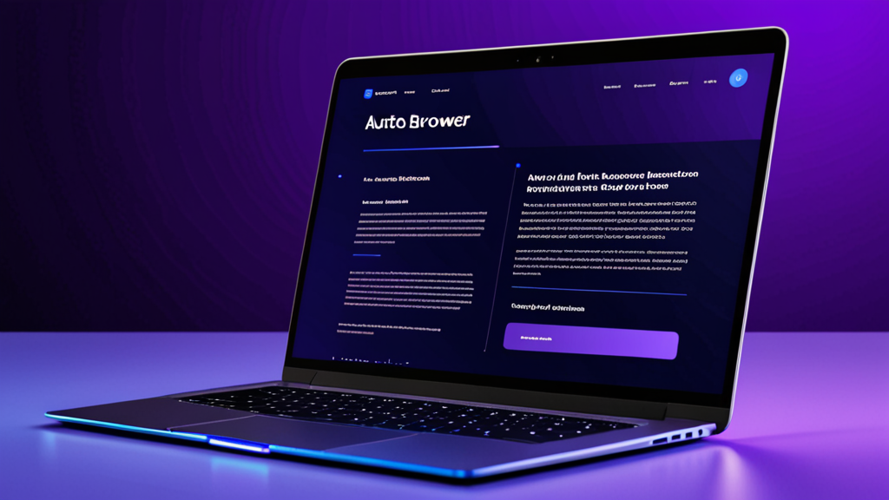

El Mejor Rellenador de Formularios con IA para Solicitudes de Empleo: Ahorra Tiempo y Reduce Errores
Si alguna vez has pasado una tarde de sábado copiando tu historial laboral en la décima solicitud online del día, conoces el sufrimiento. Te duelen los dedos. Vuelves a escribir mal el nombre de tu empleador anterior. Cada campo se siente como un pequeño impuesto a tu paciencia.
Esa entrada de datos repetitiva no solo es molesta, te está costando oportunidades. Los estudios muestran que el 60% de los solicitantes de empleo abandonan las solicitudes a mitad de camino cuando los formularios tardan demasiado. La solución no es escribir más rápido. Es trabajar de forma más inteligente.
Así es como el mejor rellenador de formularios con IA para solicitudes de empleo puede convertir horas de trabajo tedioso en minutos, y qué buscar al elegir uno.
Por Qué el Autocompletado Tradicional se Queda Corto para Solicitudes de Empleo
El autocompletado del navegador funciona bien para tu dirección y tarjeta de crédito. Pero las solicitudes de empleo son otro nivel. Piden:
- Múltiples puestos anteriores con fechas, responsabilidades y motivos de salida
- Historial educativo con promedios, carreras y años de graduación
- Listas de habilidades que cambian según el puesto
- Preguntas abiertas como "¿Por qué quieres este trabajo?"
El autocompletado estándar no puede con eso. Rellena tu nombre y teléfono, y luego te deja mirando 15 campos vacíos. Terminas copiando y pegando desde un documento de Word de todas formas.
Un rellenador de formularios con IA soluciona esto de otra manera. No solo almacena texto estático. Entiende el contexto.
Qué Hace que un Rellenador de Formularios con IA Sea Realmente Útil
No todos los rellenadores de formularios son iguales. Esto es lo que diferencia a los útiles de los que desinstalarás a la semana.
Relleno Basado en Perfil para Campos Estándar
La función principal es simple: creas un perfil una vez con tu nombre, correo, teléfono, dirección e historial laboral. Cuando llegas a una solicitud de empleo, la extensión reconoce esos campos y los rellena al instante. Sin copiar. Sin errores tipográficos.
Solo esto ahorra de 5 a 10 minutos por solicitud. Si te postulas a 20 trabajos, son más de tres horas ahorradas.
Respuestas con IA para Preguntas Abiertas
La magia real ocurre con los campos de texto. Un buen rellenador de formularios con IA no solo suelta texto genérico. Analiza la pregunta y genera una respuesta relevante.
Por ejemplo:
- Pregunta: "Describe una ocasión en la que resolviste un conflicto en el trabajo."
- Respuesta de la IA: Toma tu experiencia guardada, la formatea como un párrafo corto usando el método STAR y la inserta.
Puedes editar la respuesta antes de enviarla, pero el trabajo pesado ya está hecho.
La Privacidad Importa Más de lo que Crees
Cuando llenas solicitudes de empleo, compartes datos sensibles: números de Seguro Social (para verificaciones de antecedentes), direcciones, historial laboral. Lo último que quieres es que esos datos se envíen a un servidor en la nube que no controlas.
El mejor rellenador de formularios con IA para solicitudes de empleo procesa todo localmente. Tus datos se quedan en tu navegador. Sin cargas, sin servidores de terceros, sin riesgo de filtración de datos.
Cómo Usar un Rellenador de Formularios con IA de Forma Efectiva
Sacar el máximo provecho de estas herramientas requiere un poco de configuración. Aquí tienes un flujo de trabajo que funciona.
Paso 1: Crea un Perfil Completo
No te apresures. Dedica 20 minutos a crear un perfil detallado:
- Nombre completo, correo, teléfono, dirección
- 2-3 puestos anteriores con nombres de empresa, fechas y 2-3 viñetas por rol
- Historial educativo con nombres de instituciones, títulos y años de graduación
- Una lista de 10-15 habilidades relevantes
- Un resumen profesional corto (2-3 frases)
Cuantos más detalles añadas, mejores serán las respuestas de la IA.
Paso 2: Usa una Plantilla para Preguntas Repetidas
Muchas solicitudes hacen preguntas similares: "¿Por qué te interesa este puesto?" o "¿Cuáles son tus expectativas salariales?" Guarda 3-4 respuestas plantilla en tu perfil. La IA puede adaptarlas ligeramente según el nombre de la empresa o el título del trabajo que detecte en la página.
Paso 3: Siempre Revisa Antes de Enviar
La IA es buena, pero no perfecta. Podría malinterpretar una pregunta o generar algo que suene un poco extraño. Lee cada respuesta generada por IA antes de hacer clic en enviar. Esto toma 30 segundos por solicitud y evita errores vergonzosos.
Paso 4: Haz un Seguimiento de las Solicitudes Completadas
Algunos rellenadores de formularios registran en qué sitios los has usado. Esto te ayuda a evitar volver a postularte a la misma empresa. Si el tuyo no lo hace, mantén una hoja de cálculo simple.
Más Allá de las Solicitudes de Empleo: Quién Más se Beneficia
Los solicitantes de empleo son la audiencia obvia, pero la misma herramienta funciona para otros trabajos repetitivos con formularios.
Personal de Oficinas Médicas
Los formularios de admisión de pacientes piden la misma información cada vez: nombre, aseguradora, historial médico, medicamentos actuales. Un rellenador de formularios con IA puede completarlos desde un perfil guardado, reduciendo el tiempo de registro de 10 minutos a 2.
Procesadores de Reclamos de Seguros
Los formularios de reclamos son notoriamente repetitivos. Nombre del asegurado, número de póliza, fecha del siniestro, descripción del daño. Un rellenador de formularios reduce los errores de entrada de datos y acelera el procesamiento.
Freelancers y Consultores
Las propuestas y contratos requieren tu nombre, dirección comercial, descripciones de servicios y precios. En lugar de volver a escribir esto para cada cliente, deja que la IA maneje la parte estándar mientras tú te concentras en lo personalizado.
Reclutadores
Si estás revisando candidatos y llenando formularios de evaluación, una extensión de autocompletado puede ahorrar tiempo en campos repetitivos como título del puesto, departamento y fecha de entrevista.
Qué Buscar en una Extensión de Autocompletado para Chrome
Si estás buscando un rellenador de formularios con IA, ten en cuenta estos criterios.
Procesamiento Local
Tus datos nunca deben salir de tu máquina. Busca extensiones que indiquen explícitamente que procesan todo en el navegador. Esto no es negociable para información sensible.
Perfiles Personalizables
Necesitas más de un perfil. Quizás tengas un perfil para solicitudes de empleo y otro para propuestas de freelance. La extensión debe permitirte cambiar entre ellos fácilmente.
Precisión en la Detección de Campos
Las mejores extensiones reconocen campos incluso cuando los sitios web usan etiquetas no estándar. "Nombre" debe rellenarse ya sea que el sitio lo llame "firstName", "fname" o "given-name".
Sin Permisos Innecesarios
Algunos rellenadores de formularios solicitan acceso a todos tus datos de navegación. Eso es una señal de alerta. Una buena extensión solo necesita acceso a los campos del formulario y a la página en la que estás trabajando activamente.
Errores Comunes que Comete la Gente
Incluso con una gran herramienta, puedes sabotear tu éxito. Evita estos errores.
Dependencia Excesiva de las Respuestas de la IA
La IA puede escribir una respuesta decente a "¿Por qué quieres este trabajo?", pero no capturará tu entusiasmo genuino ni tu conocimiento específico sobre la empresa. Usa la IA como punto de partida, luego personaliza.
No Actualizar tu Perfil
Tus habilidades crecen. Tu historial laboral cambia. Si no actualizas tu perfil cada pocos meses, la IA generará respuestas desactualizadas.
Ignorar el Formato
Algunos portales de solicitudes eliminan el formato del texto pegado. Si tu respuesta de la IA usa viñetas o negritas, podría verse mal después de enviarla. Quédate con texto plano para estar seguro.
Comparación Rápida: Rellenador de Formularios con IA vs. Entrada Manual
| Tarea | Entrada Manual | Con Rellenador de Formularios con IA |
|---|---|---|
| Información básica (nombre, correo) | 30 segundos | 1 segundo |
| Historial laboral (3 puestos) | 5-7 minutos | 30 segundos |
| Preguntas abiertas (3 preguntas) | 10-15 minutos | 2 minutos |
| Revisar y enviar | 2 minutos | 2 minutos |
| Total por solicitud | 17-24 minutos | 5 minutos |
Esa diferencia de 12-19 minutos por solicitud se acumula rápido. Postúlate a 50 trabajos y habrás ahorrado entre 10 y 16 horas.
Por Qué Esto Importa Más en 2025
El mercado laboral es competitivo. Las empresas están usando IA para filtrar currículums y rechazar automáticamente a candidatos que no coinciden con palabras clave. Cuanto más rápido puedas enviar solicitudes, más puestos podrás abarcar.
Pero la velocidad sin precisión no sirve de nada. Un rellenador de formularios con IA que cometa errores —rellenar fechas incorrectas, malinterpretar campos— perjudicará tus posibilidades. Por eso es prudente probar una herramienta en algunas solicitudes de bajo riesgo primero.
Tomando la Decisión
No necesitas pasar horas investigando cada rellenador de formularios. Concéntrate en tres cosas: privacidad, precisión y facilidad de configuración. Si una extensión cumple con esos requisitos, vale la pena probarla.
Para los solicitantes de empleo en particular, el mejor rellenador de formularios con IA para solicitudes de empleo es aquel que maneja tanto los campos estándar como las preguntas abiertas sin enviar tus datos a la nube. Esa combinación de velocidad y privacidad es rara, pero existe.
Si quieres ver cómo es una solución bien construida, echa un vistazo a Autofill AI. Utiliza una IA que se ejecuta completamente en tu navegador — tus datos nunca tocan un servidor. Puedes rellenar campos estándar desde un perfil guardado y generar respuestas para preguntas abiertas usando IA local o tu propia clave API. Está diseñado exactamente para ese tipo de trabajo repetitivo con formularios que te consume tiempo.
Pero independientemente de la herramienta que elijas, el principio es el mismo: deja de tratar el llenado de formularios como un mal necesario. Automatiza las partes aburridas. Guarda tu energía para las partes que realmente importan — como dar en el clavo en la entrevista.